Food photo credits
The food photos shown on the menu come from Wikimedia Commons and are used under the licence named for each photo. They were resized for the website. Photos uploaded by the canteen administrator are not listed here.
| Photo | Shown for | Author | Licence | Source |
|---|---|---|---|---|
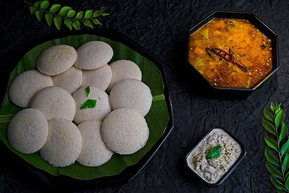 | Idli | Sutapa Pal | CC BY-SA 4.0 | File:Idli Sambar-Noida-UP-SP004.jpg |
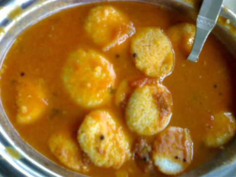 | Sambar idli | Randhirreddy at English Wikipedia | CC BY-SA 3.0 | File:Button idli.JPG |
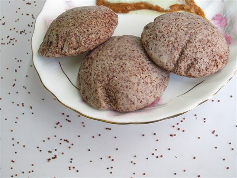 | Ragi idli | Kalaiselvi Murugesan | CC BY-SA 4.0 | File:Ragi idli.JPG |
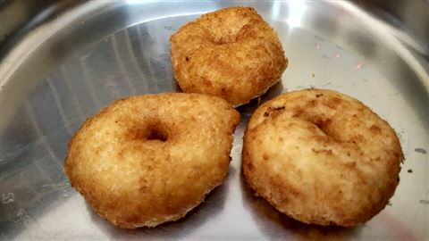 | Vada (medu vada) | Thamizhpparithi Maari | CC BY-SA 4.0 | File:Aesthetic Medu Vadai.jpg |
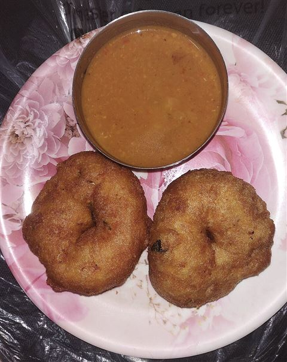 | Sambar vada | Yakshitha | CC BY-SA 4.0 | File:Vada Sambar.jpg |
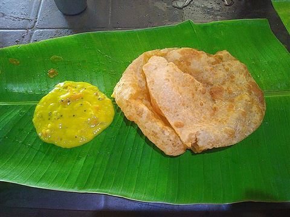 | Poori | Dr. Chinchu C. | CC BY-SA 4.0 | File:Poori Masala Tamil Nadu.jpg |
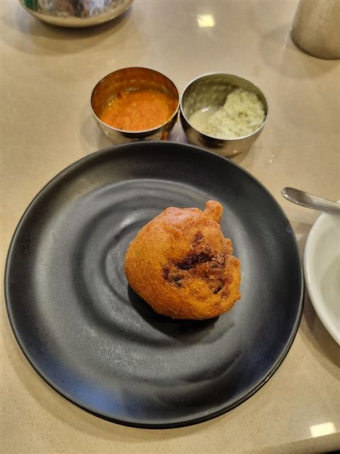 | Bonda | Ganesh Mohan T | CC BY-SA 4.0 | File:Bonda from Kerala 01.jpg |
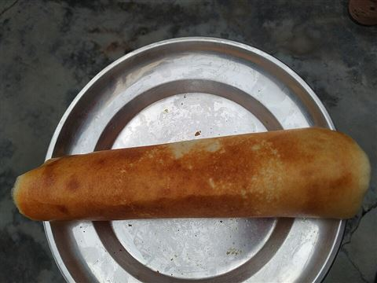 | Plain dosa | Libreravi | CC BY-SA 4.0 | File:Plain Dosa from North India.jpg |
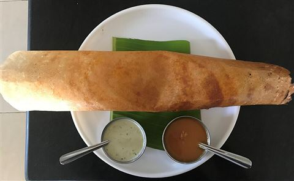 | Masala dosa | Marajozkee | CC BY-SA 4.0 | File:Masala dosa 01.jpg |
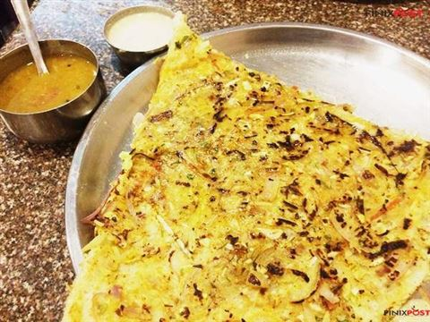 | Onion dosa | Manpreet Kaur from India | CC BY 2.0 | File:Onion Dosa (22325953018).jpg |
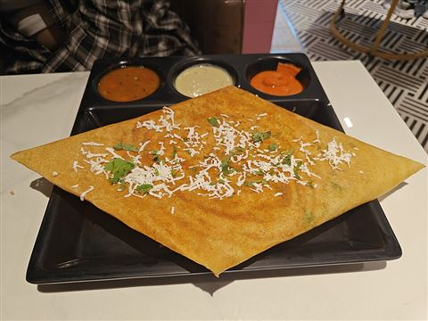 | Paneer dosa | Contrapunctus-1 | CC BY-SA 4.0 | File:Paneer dosa at Marksmen, Hazratganj, Lucknow (2025-08-02).jpg |
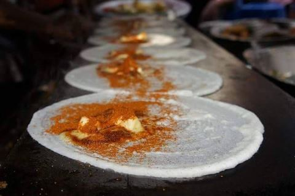 | Butter dosa | Kavya Bandodkar | CC BY-SA 4.0 | File:Benne dosa (butter dosa).jpg |
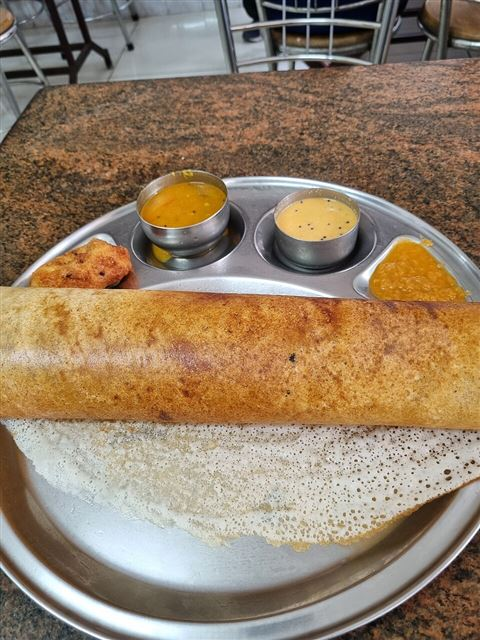 | Ghee roast dosa | Ganesh Mohan T | CC BY-SA 4.0 | File:Ghee Roast 01.jpg |
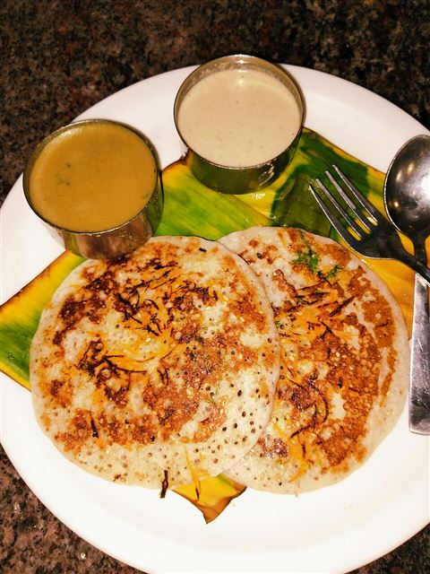 | Set dosa | Yakshitha | CC BY-SA 4.0 | File:Set Dosa 1.jpg |
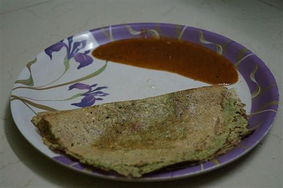 | Pesarattu | NAVYA | CC BY-SA 4.0 | File:Pesarattu with ginger pickel.JPG |
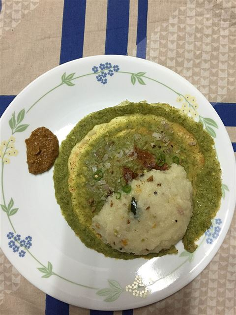 | Upma pesarattu | MVishnuV | CC BY-SA 4.0 | File:Pesarattu-Upma with Ginger Chutney.JPG |
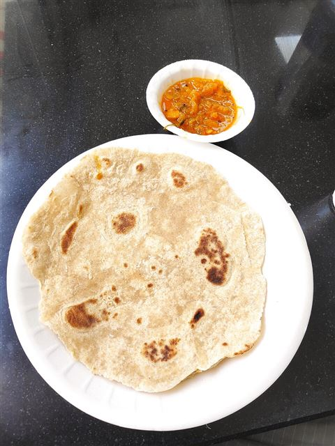 | Chapati | Gaurav Dhwaj Khadka | CC BY-SA 4.0 | File:Chapati 1.jpg |
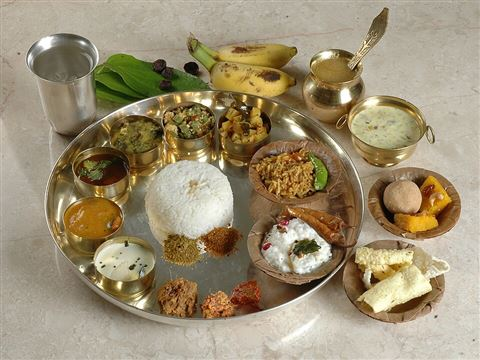 | Meals (thali) | PriyaBooks | CC BY 2.0 | File:Vegetarian Andhra Meal.jpg |
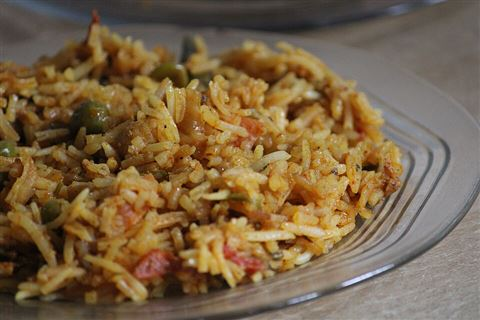 | Veg biryani | Phadke09 | CC BY-SA 4.0 | File:Vegetable Biryani IMG 001.jpg |
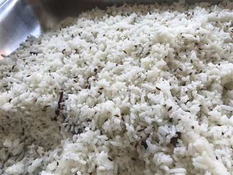 | Jeera rice | Marajozkee | CC BY-SA 4.0 | File:Jeera rice.jpg |
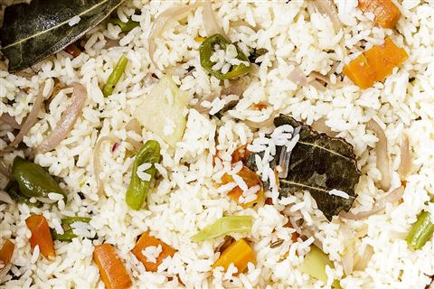 | Veg pulao | Jagisnowjughead | CC BY-SA 4.0 | File:VEGETABLE PULAO ~ An Indian cuisine made from fried rice mixed with fried vegetables.jpg |
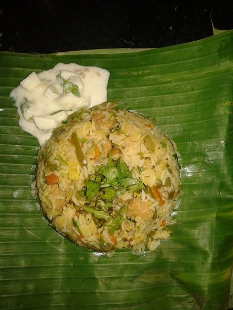 | Paneer pulao | Shruti1493 | CC BY-SA 4.0 | File:Paneer pulao and raita.jpg |
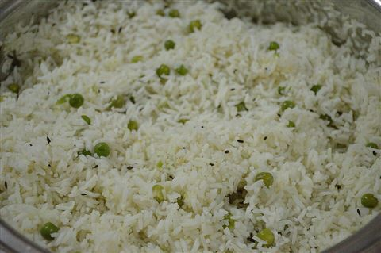 | Mutter (peas) pulao | Biswarup Ganguly | CC BY 3.0 | File:Matar Pulao - Mohali 2016-08-06 8222.JPG |
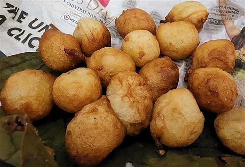 | Punugulu | Radhika41 | CC BY-SA 4.0 | File:Punugulu 3.jpg |
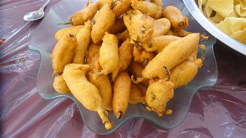 | Mirchi bajji | Bhaskaranaidu | CC BY-SA 4.0 | File:Andhra famous mirchi bajji.JPG |
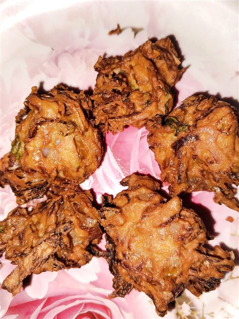 | Onion pakodi | Yakshitha | CC BY-SA 4.0 | File:Onion Pakoda 1.jpg |
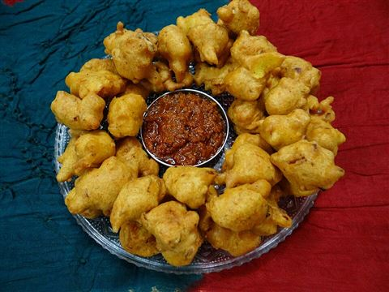 | Pakodi | Mdsmds0 | CC BY-SA 4.0 | File:Onion Besan Pakoda.JPG |
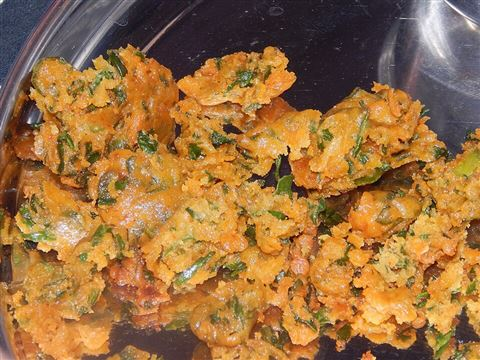 | Palak pakodi | Amitsu12 | CC BY-SA 4.0 | File:Palak Pakoras.jpg |
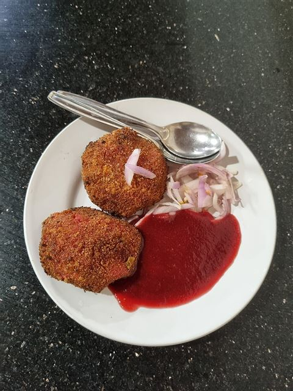 | Veg cutlet | Ganesh Mohan T | CC BY-SA 4.0 | File:Kerala Style Vegetable Cutlet.jpg |
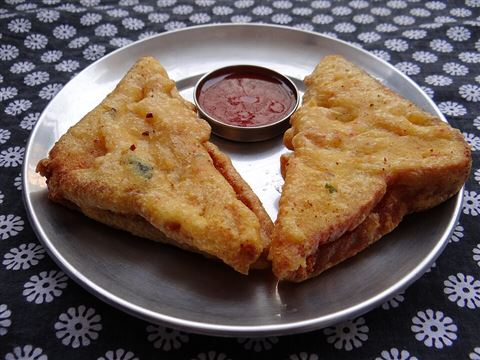 | Bread bajji | Mdsmds0 | CC BY-SA 4.0 | File:Bread Pakora (Stuffed with Mashed-Spicy Potatoes).JPG |
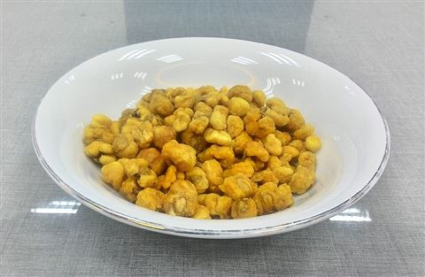 | Crispy corn | Gunawan Kartapranata | CC BY-SA 4.0 | File:Jagung goreng 1.jpg |
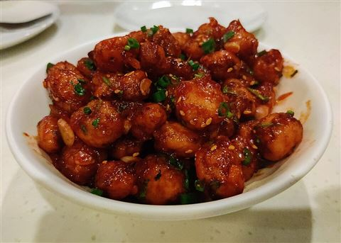 | Chilli baby corn | Dikshita Bairagi | CC BY-SA 4.0 | File:Crispy chilli baby corn.....jpg |
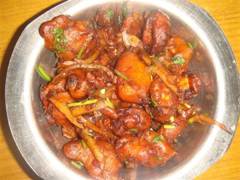 | Baby corn manchurian | Kiran Ganesh | CC BY-SA 4.0 | File:Baby Corn Manchury Dry.jpg |
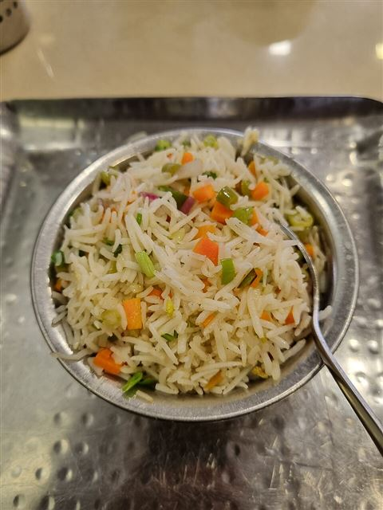 | Veg fried rice | Ganesh Mohan T | CC BY-SA 4.0 | File:Kerala vegetable fried rice 2.jpg |
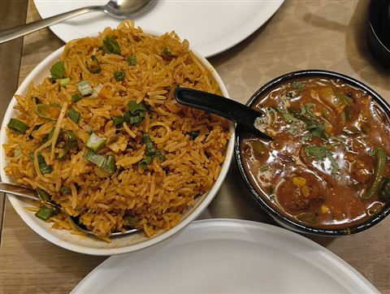 | Schezwan fried rice | Sakurakat | CC0 | File:Veg Triple Schezwan Fried Rice Vishwanand 2026-01-28.jpg |
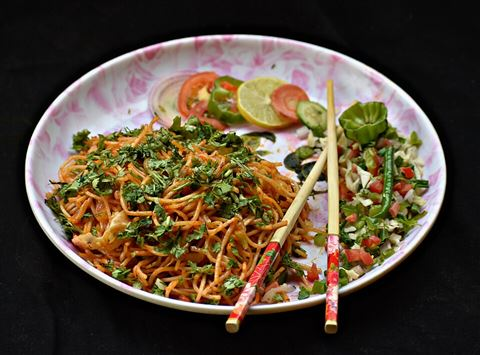 | Veg noodles | Farhana Sayyed | CC BY-SA 4.0 | File:Hakka Noodles Veg.jpg |
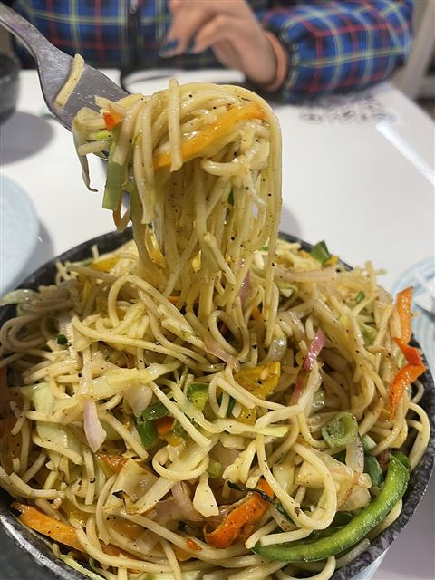 | Hakka noodles | SGUae | CC BY 4.0 | File:Tasty hakka noodles image.jpg |
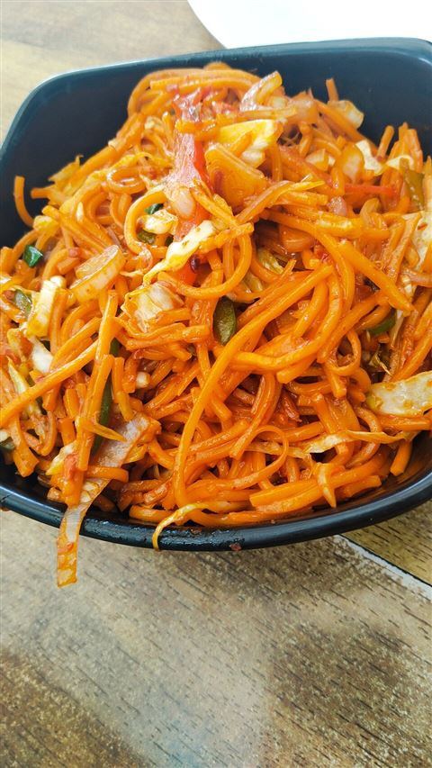 | Schezwan noodles | Yakshitha | CC BY-SA 4.0 | File:Schezwan Noodles.jpg |
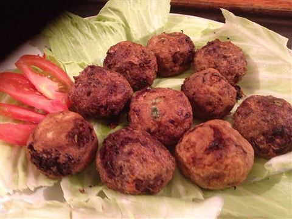 | Veg manchurian | Fatimahope | CC BY-SA 4.0 | File:Veg manchurian Balls.jpg |
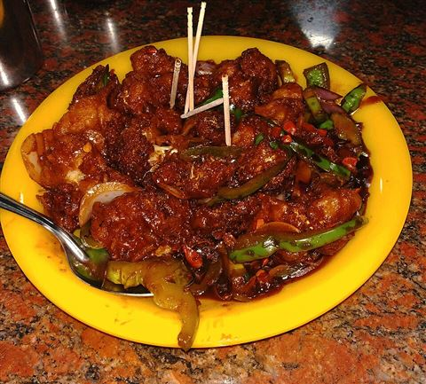 | Gobi manchurian | Yakshitha | CC BY-SA 4.0 | File:ಗೋಬಿ ಮಂಚುರಿ.jpg |
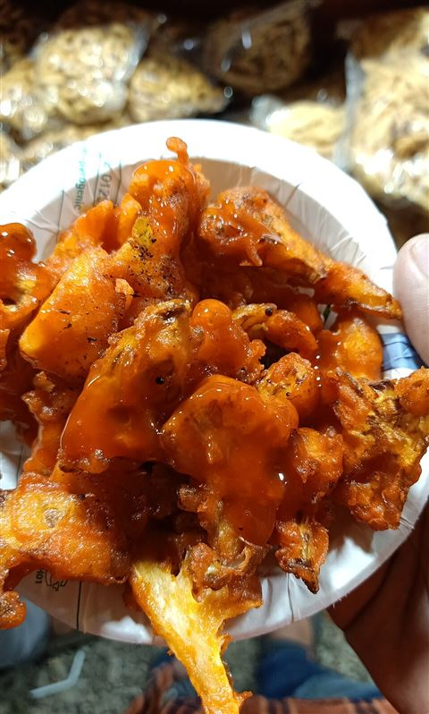 | Gobi 65 | Alvinjesusyouth | CC BY-SA 4.0 | File:Gobi 65 (cauliflower fry).jpg |
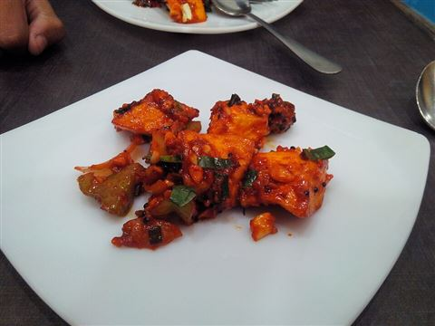 | Paneer 65 | Jinymystery | CC BY-SA 4.0 | File:Paneer 65.jpg |
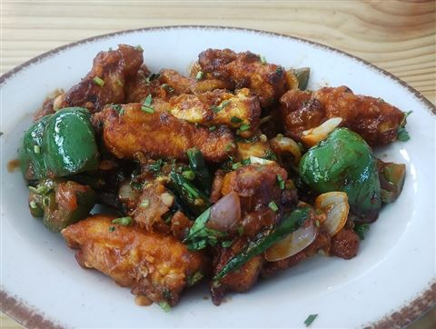 | Chilli paneer | Gpkp | CC BY-SA 4.0 | File:Paneer Chilli, Bengaluru (2026) 02.jpg |
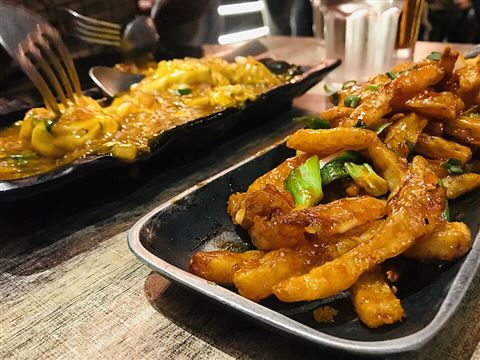 | Crispy chilli potato | Simranjeet Sidhu | CC BY-SA 4.0 | File:Honey Chilli potato.jpg |


.jpg){kind=link}
.jpg){kind=link}
.jpg){kind=link}


.JPG){kind=link}


.jpg){kind=link}

_02.jpg){kind=link}